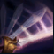

THE GRAND DUELIST
FIORA
The most feared duelist in all Valoran, Fiora is as renowned for her brusque manner and cunning mind as she is for the speed of her bluesteel rapier. Born to House Laurent in the kingdom of Demacia, Fiora took control of the family from her father in the wake of a scandal that nearly destroyed them. House Laurent's reputation was sundered, but Fiora bends her every effort to restore her family's honor and return them to their rightful place among the great and good of Demacia.
ABILITIES

PASSIVE
DUELIST'S DANCE
Fiora has revealed a Vital on this Champion. If she hits the Vital, she restores Health and gains Move Speed.